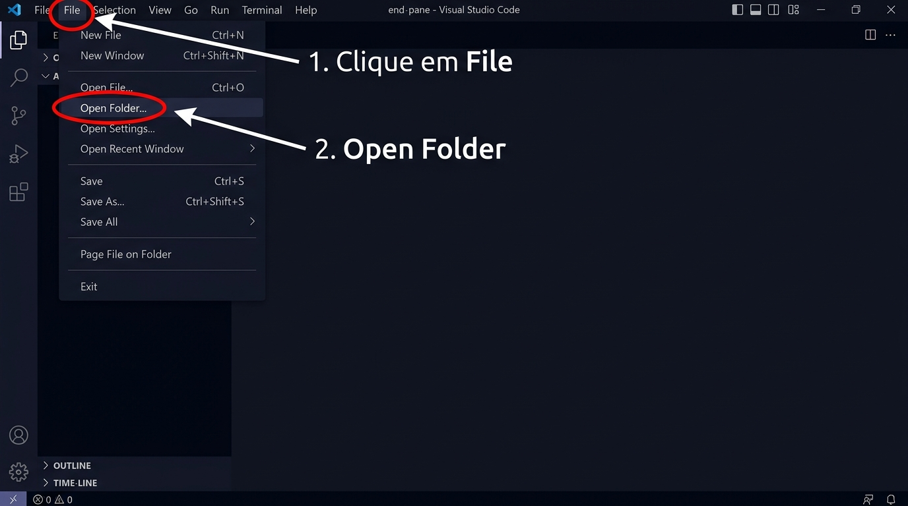
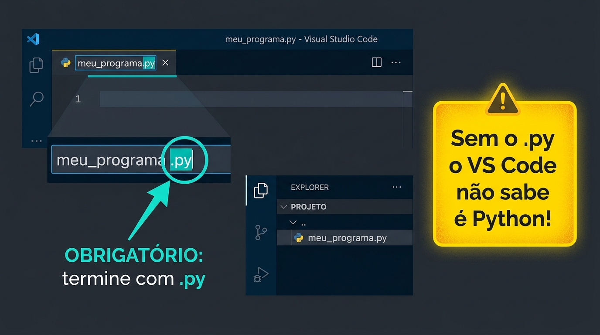
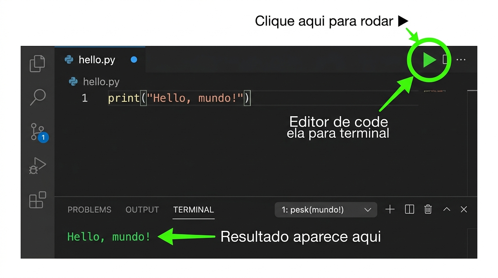

Formulários Oficiais da Aula
Seu passaporte para a emissão do certificado FAPEMING / CEFET-MG
📝 Cadastro do Aluno
- Nome Completo — sem abreviações
- CPF — para validação acadêmica
- E-mail Ativo — receberá o certificado
📋 Formulário T0 — Linha de Base
- Responda com honestidade — avaliação diagnóstica
- Individual — sem consultas externas
- Importante: ponto de partida para o certificado
O Computador Aprende a Pensar
Variáveis, Tipos e Estruturas Condicionais com if, elif e else
Aponte a câmera para abrir esta apresentação no seu dispositivo e acompanhar de perto!
📲 Clique na imagem para expandir
🌐 Link direto dos SlidesAbrindo sua Pasta no VS Code
Faça junto comigo — olhe o projetor e repita na sua máquina

Open Folder" class="vscode-slide-img" style="display:block">📋 Passo a Passo:
- Clique em File no menu superior
- Clique em Open Folder...
- Navegue até a pasta Documentos → TRILHANDO
- Clique em Selecionar Pasta
💡 Por que abrir uma pasta?
O VS Code trabalha com pastas, não arquivos isolados. Isso organiza todos os seus scripts num só lugar!
Criando e Nomeando Arquivos Python
O .py no final do nome é obrigatório — sem ele o código não roda!

✅ Nomes Corretos:
hello.py
quiz_joao.py
❌ Nomes Errados:
hello
💡 Atalho para salvar: Ctrl + S
Salve sempre antes de rodar!
Rodando o Código + Atalhos Essenciais
Teste agora: escreva print("Hello, mundo!") e pressione ▶

⌨️ Atalhos que usaremos todo dia:
Os 3 Pilares que usaremos hoje
Revisão expressa para todo mundo ficar na mesma página
Mostra texto na tela.
Lê o que o usuário digita.
Guarda informação para usar depois.
Nivelamento em 4 linhas
Arquivo: nivelamento.py — professor digita, alunos copiam junto
🔑 O que é o f antes das aspas?
O f ativa as f-strings — ele permite que você coloque variáveis dentro do texto usando {nome_da_variavel}.
f e rode de novo!→
{nome} vai aparecer como texto literal — não substitui! Efeito uau garantido 😱
Tipos de Dados e Conversão
input() sempre retorna texto — converta quando precisar de número
| Tipo | O que guarda | Como obter do input() |
|---|---|---|
str | Texto: "Ana", "sim" | Padrão (não converte) |
int | Inteiro: 16, 100 | int(input(...)) |
float | Decimal: 1.75, 9.5 | float(input(...)) |
💀 Sem conversão — resultado errado!
✅ Com int() — resultado correto!
Sua vez com int() e float()!
Crie um novo arquivo e escreva o código do zero — sem copiar!
🎮 Desafio: Praticando int() e float()
Escolha uma das opções abaixo para fazer no VS Code:
- Opção A (int): Peça a idade com
int(input(...)), calcule os meses (idade * 12) e exiba o resultado. - Opção B (float): Peça preços de lanche e bebida com
float(input(...)), calcule a soma e exiba o total.
💡 Crie seus próprios nomes de variáveis e perguntas!
🕵️ Desafio Detetive:
- O que acontece se você digitar
12.50noint()? - O que acontece se usar vírgula
12,50em vez de ponto12.50nofloat()?
ESTRUTURA DO INT E FLOAT:
Tente fazer a Opção A e a Opção B no mesmo arquivo!
Só o if — O começo de tudo
Arquivo: decisao_passo1.py — temática: seguidores nas redes sociais
📐 A Regra da Indentação
O espaço de 4 posições (ou Tab) antes do print() é obrigatório. Ele diz ao Python: "essa linha pertence ao if".
Nada aparece! Por quê? Porque não existe um "plano B" ainda...
Sua vez com o if!
Crie um novo arquivo e escreva o código do zero — sem copiar!
🎮 Desafio: O Verificador de Nota
Crie um programa que:
- Pede a nota do aluno com
int(input(...)) - Usa
ifpara verificar se a nota é >= 7 - Se sim, imprime:
🏆 Aprovado!
💡 Dica: o código tem só 3 linhas!
Estrutura do if (referência):
Tente mudar o valor mínimo para 5 e veja o que acontece!
if + else — O Plano B
Arquivo: decisao_passo2.py — agora o programa responde para qualquer entrada
seguidores >= 10000Bloco do if
Bloco do else
Com só um if/else não dá fácil... mas existe um terceiro comando!
Sua vez com o if + else!
Adicione o plano B ao exercício anterior
🎮 Desafio: Aprovado ou Reprovado?
Evolua o programa anterior adicionando o else:
- Se nota >= 7:
✅ Aprovado! Parabéns! - Se não (
else):❌ Reprovado... Bora estudar!
💡 Agora o programa SEMPRE dá uma resposta!
Estrutura do if + else:
Troque os textos por emojis e mensagens mais criativas!
if + elif + else
Arquivo: decisao_passo3.py — classificador de perfil nas redes sociais
🧠 Como o Python pensa?
Testa condição a condição, de cima para baixo. Na primeira verdadeira, executa e pula as demais. Posso ter quantos elif quiser!
→ if >= 100000 é FALSO → elif >= 10000 é VERDADEIRO → executa e para!
Forma completa: if + elif + else!
Agora com múltiplas opções — o desafio mais completo até agora!
🏫 Desafio: Sistema de Notas Completo
Crie um programa que classifica a nota de 0 a 100:
- >= 70:
✅ Aprovado! Parabéns! - >= 40:
⚠️ Recuperação! Estude mais. - Abaixo de 40:
❌ Reprovado.
💡 Você vai precisar de 1 if, 1 elif e 1 else!
Estrutura completa:
Adicione uma 4ª categoria: nota >= 90 = "🏅 Excelente!" usando mais um elif no início!
Seja um Detetive de Código!
Leia o código — encontre onde cada decisão acontece
1. Quantas condições if/elif/else existem neste código?
2. O que acontece se o jogador digitar "A" no teclado?
3. Se trocarmos == por != na linha da porta 1, o que muda na lógica?
Intervalo — 15 Minutos
Descanse, coma, tome água. Quando voltar: é hora de criar com IA!
if/elif/else e rodar no VS Code.As Regras do Jogo com a IA
Você é o detetive, a IA é a assistente — não o contrário!
📋 Regras de Ouro
- 🤖 A IA gera o código — você entende e testa.
- 🐛 Deu erro? → Copie → Cole na IA → Peça correção.
- 🕵️ Não copie sem ler. Seja o detetive, não o copista!
🐛 Rotina de Depuração com IA
3 Missões com IA — você escolhe
Clique em uma missão para ver o Prompt Exemplo e como testar no VS Code!
MISSÃO A — Mestre de RPG
Aventura de texto com 3 escolhas. O if/elif/else decide o destino do herói: vitória, derrota ou item secreto.
MISSÃO B — Avaliador de Quiz
Quiz de cultura pop com 3 perguntas, variável de pontos e título final baseado nos acertos com if/elif/else.
MISSÃO C — Assistente Inteligente
Assistente de moda: pergunta temperatura e chuva e usa if/elif/else com and/or para recomendar o look.
Tente Quebrar o Seu Próprio Código!
Computadores são literais — eles fazem exatamente o que você manda
| O que digitar | O que observar | |
|---|---|---|
| 🔡 | Texto onde espera número: "abc" | Vai dar ValueError! O programa trava. |
| 📭 | Apertar Enter sem digitar nada | O programa aceita ou explode? |
| 🔠 | "Sim" vs "sim" vs "SIM" | O if == "sim" diferencia! Python é case-sensitive. |
| 🔢 | Números extremos: -1, 0, 999999 | Alguma condição cobre todos esses casos? |
→ Nas próximas aulas:
try/except para tratar esses erros. Por enquanto, peça ajuda à IA!
O que vocês aprenderam hoje
Salve o código e guarde o chat com a IA antes de sair!
💾 Como salvar:
- Ctrl + S no VS Code
- Nome:
quiz_[seunome].py - Pasta: Documentos → TRILHANDO → Aula02
🚀 Próxima Aula:
Laços de Repetição (while e for) — o computador vai aprender a REPETIR ações!